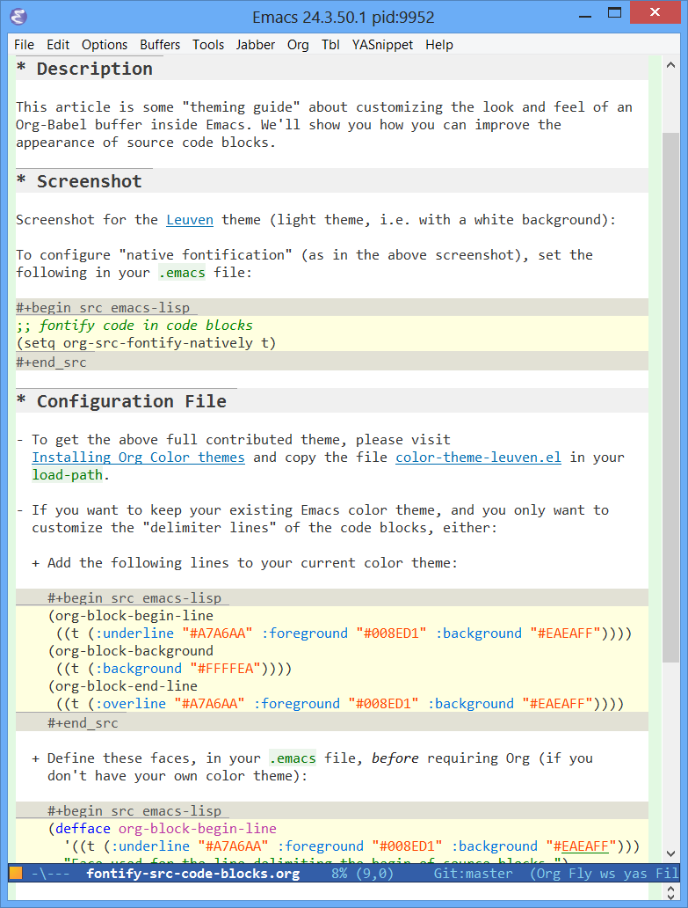
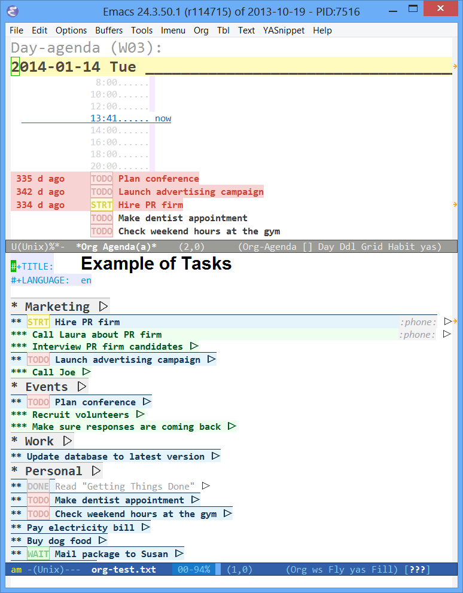

Leuven-theme
Table of Contents

Looking for an awesome Emacs color theme? Here’s the place to find one!
Welcome to the custom Leuven theme, an elegant color theme for light backgrounds, with built-in style for many components such as Org mode, Gnus, Dired+ and EDiff. Make it yours!
Tweet1 Quotations
“Your Org-enhancing color-theme “leuven” ROCKS! … and not just for
Org.”
– Johan S.
“Amazing theme. I’ve been switching themes like socks the past 3
years and finally found a theme that fits me exactly.”
– zeltak
“The Leuven theme has quickly become my favorite – the colors are
great and the visual details for Org mode are just wonderful.”
– Steve B.
“I’m using leuven theme, which is a great theme for Org-mode. […] I
cannot use another emacs-theme.”
– Joseph Vidal-Rosset
“Leuven theme is awesome!”
– Joost Diepenmaat
2 Screenshots
2.1 Org buffer (with code)
Fontified source code blocks:

Note that, to get the whole heading lines fontified, you need to
add the following line into your .emacs file:
;; Fontify the whole line for headings (with a background color). (setq org-fontify-whole-heading-line t)
2.2 Agenda
Agenda with task list:

3 Install it
Though Leuven-theme has been added in Emacs 24.4 (October 2014), you can get a fresh version of it, at any time, from MELPA or from GitHub.
3.1 Install the ELPA package
In Emacs 24.x, M-x list-packages is the
recommended way to list and install packages.
MELPA keeps stable releases of Leuven theme.
See http://melpa.milkbox.net/#installing
for more information on how to install leuven-theme:
-
Just add MELPA to
package-archives,;; Archives from which to fetch. (setq package-archives (append '(("melpa" . "http://melpa.milkbox.net/packages/")) package-archives))
- Call
list-packages, - Search for
leuven-theme, - Mark it for installation with
i, and - Execute the install action with
x.
3.2 Install the Git version
Get the full Git repository at https://github.com/fniessen/emacs-leuven-theme using the following command:
git clone git://github.com/fniessen/emacs-leuven-theme.git
Add the following in your .emacs file:
(add-to-list 'custom-theme-load-path "/path/to/emacs-leuven-theme") (load-theme 'leuven t) ; For Emacs 24+.
Restart Emacs.
3.3 Customize it
You don’t like my large Org level-1 headings (though I made them larger on purpose!)?
You should be able to get my theme and a smaller face by using something such as:
(set-face-attribute 'org-level-1 nil :height 90) ; 9 pt font.
That should change the font size without changing the colors.
4 Contributing
4.1 Issues
Report issues and suggest features and improvements on the GitHub issue tracker.
4.2 Patches
I love contributions! Patches under any form are always welcome!
4.3 Donations
If you like the emacs-leuven-theme project, you can show your appreciation and support future development by making a donation through PayPal.
Regardless of the donations, emacs-leuven-theme will always be free both as in beer and as in speech.
5 License
Copyright (C) 2003-2015 Free Software Foundation, Inc.
Author: Fabrice Niessen
Keywords: emacs color theme
This program is free software; you can redistribute it and/or modify it under the terms of the GNU General Public License as published by the Free Software Foundation, either version 3 of the License, or (at your option) any later version.
This program is distributed in the hope that it will be useful, but WITHOUT ANY WARRANTY; without even the implied warranty of MERCHANTABILITY or FITNESS FOR A PARTICULAR PURPOSE. See the GNU General Public License for more details.
You should have received a copy of the GNU General Public License along with this program. If not, see http://www.gnu.org/licenses/.